cheetahclaws serve) · Docker / home-server · MCP HTTP/SSE + OAuth 2.0 · 20-source research incl. 知乎 · B站 · 微博 · 小红书 · Web Chat UI with folders & multi-user auth.
Open Source · Python · Any Model · Runs 24/7
The Fast Personal AI Assistant That Works With Any Model
Claude, GPT, Gemini, DeepSeek V4, Qwen, Ollama, or your own endpoint. One tool, every model, fully hackable in Python — with an Agent-OS kernel, autonomous Research Lab, and 24/7 daemon mode.

NEW · v3.05.79
Agent-OS kernel v1.0 · Research Lab (autonomous multi-day research) · Daemon mode (
See what shipped →
Interactive recording — pause, scrub, copy text. Loops automatically.
33+
Built-in Tools
10+
Model Providers
110K+
Lines of Python
1,900+
Tests Passing
What’s New in v3.05.79
Active development — major upgrades shipped in the last 30 days. Full changelog →
🧠
Agent-OS Kernel v1.0
The cc_kernel/ layer: process table, capability model, quota ledger, scheduler, mailbox, AgentFS. 27 RFCs shipped · 1,771 tests · zero regressions on the legacy REPL path. Design notes →
🔬
Research Lab
Autonomous multi-day research with 9 specialised agents (PI, Engineer, 3× Reviewers, …), sandboxed Python experiments, citation verification (arXiv / Semantic Scholar / CrossRef), and reviewer-author iteration. Targets arXiv-grade preprint quality.
🌏
20-Source Research Pipeline
Parallel fan-out across arXiv, Semantic Scholar, OpenAlex, HuggingFace Papers, HackerNews, GitHub, Reddit, SEC EDGAR, Twitter/X, plus 知乎 · B站 · 微博 · 小红书. Cross-platform attention heat tables, entity extraction, weekly trend tracking.
⚙
Daemon Mode — 24/7
cheetahclaws serve runs the agent as a long-lived service. Manage with daemon status / stop / logs / rotate-token. Survives reboots, runs autonomously on your home server.
🐢
Docker & Home-Server
One-command deploy via docker-compose up. Production-hardened web UI: SQLAlchemy persistence, bcrypt + JWT multi-user auth, ops endpoints, full pytest suite.
🔗
MCP HTTP/SSE + OAuth 2.0
Model Context Protocol over HTTP / Server-Sent Events with OAuth 2.0 PKCE for enterprise SSO. ANTHROPIC_ENDPOINT corporate-proxy override, .env loader, polished AskUserQuestion UI.
💬
Web Chat UI — ChatGPT-Style
Session folders, drag-and-drop organization, active-folder context, batch select & export, resizable sidebar. Slash commands work everywhere (Docker / --web / Telegram / WeChat / Slack).
🚀
DeepSeek V4 & New Providers
First-class support for DeepSeek V4, multi-model prompt adaptation, end-to-end prompt-cache token tracking across all providers with full checkpoint round-trip.
📥
Cross-Channel File Round-Trip
Telegram / WeChat / Slack bridges now support full file upload & download. Pickable permission prompts surface natively in chat. Stagnation-stop guards against runaway loops.
Built For
CheetahClaws adapts to your workflow — pick the closest match to see what you can do today.
Developers
Ship Code Faster
Plan-then-implement workflow, git-worktree sub-agents, checkpoint & rewind, MCP integration. Bring your own model — Claude Sonnet for hard problems, local Ollama for the privacy-sensitive stuff.
/plan/worker/reviewtmuxMCP
Researchers
Autonomous Research
Multi-day research lab with PI / Engineer / Reviewer agents. 20-source pipeline (arXiv, Semantic Scholar, HuggingFace, 知乎, B站) with citation verification, attention heat tables, weekly trend tracking.
/research/lab/monitorarXiv20 sources
Power Users
Run 24/7 At Home
Daemon mode + Docker on your home server. Control from phone via Telegram / WeChat / Slack. Voice input, PDF / Excel / Email parsing, cloud session sync — your personal AI butler.
daemonDockerTelegramWeChatWhisper
Teams
Self-Hosted Coding Bot
Multi-user web UI with bcrypt + JWT auth. MCP HTTP/SSE + OAuth 2.0 PKCE for enterprise SSO. ANTHROPIC_ENDPOINT for corporate proxy. Plugin system for in-house tools.
multi-userOAuthSSEproxyplugins
Everything You Need
A complete AI coding assistant that runs in your terminal, works with any model, and extends with plugins.
⚡
Multi-Provider
Claude, GPT-4o, Gemini, DeepSeek, Qwen, Kimi, MiniMax, Ollama, or any OpenAI-compatible endpoint. Switch with /model.
💻
33 Built-in Tools
Read, Write, Edit, Bash, Glob, Grep, WebFetch, WebBrowse, ReadPDF, ReadEmail, NotebookEdit, and more — all callable by the AI.
👥
Multi-Agent
Spawn specialized sub-agents (coder, reviewer, researcher) in parallel with git worktree isolation. Background execution with named addressing.
📱
Remote Control
Control from your phone via Telegram, WeChat, or Slack bridges. Job queues, slash commands, and live tool tracking.
🔒
Security
Permission system (auto/manual/plan modes), prompt injection detection, credential filtering in /config, safe stdio wrapper.
🚀
Autonomous Agents
Launch research assistants, bug fixers, paper writers, and auto-coders that run independently. 4 built-in templates + custom.
🎧
Voice Input
Record, transcribe, auto-submit. Offline Whisper — no API key, no subscription. 99 languages.
📚
PDF, Excel, Email
Read PDFs, OCR images, parse spreadsheets, read and send emails — all via natural language commands.
🔌
Plugin System
Install plugins from git URLs. Extend with custom tools, commands, skills, and MCP servers. Full authoring guide included.
Works With Every Model
10+ providers, 200+ models. Cloud or local — your choice.
Anthropic Claude
OpenAI GPT-4o / GPT-5
Google Gemini
DeepSeek
Alibaba Qwen
Moonshot Kimi
Zhipu GLM
MiniMax
Ollama (local)
LM Studio
vLLM
Any OpenAI-compatible
See It in Action
Real workflows, real productivity gains.
Code Review with Local Model
# Free, private, nothing leaves your machine $ cheetahclaws --model ollama/qwen2.5-coder [project] 12% » Review src/api.py for security issues and performance problems. I'll analyze the file... [Read] src/api.py (142 lines) [Grep] SQL injection patterns... Found 3 issues: 1. Line 42: SQL injection via f-string 2. Line 78: Missing rate limiting 3. Line 95: Unvalidated redirect
Local Code Review
Run entirely offline with Ollama. Your code never leaves your machine. The AI reads files, searches for patterns, and gives actionable feedback.
- Zero cloud, zero API cost
- Works with any Ollama model
- Context-aware (reads your project files)
Remote Control via Telegram
Control CheetahClaws from your phone while it runs on your workstation. Send commands, get results, manage tasks.
- Full slash command passthrough
- Job queue when AI is busy
- Also works with WeChat and Slack
Phone → Server
# You (Telegram): What files changed in the last commit? # CheetahClaws: [Bash] git log --oneline -1 [Bash] git diff HEAD~1 --stat Last commit: "fix auth middleware" 3 files changed: - src/auth.py (+12 -5) - tests/test_auth.py (+28) - config.yaml (+1) # You: Fix the type error on line 42 # CheetahClaws edits the file...
Email + PDF + Excel
[project] » Read the contract at ~/Documents/contract.pdf and summarize the key payment terms. [ReadPDF] contract.pdf (24 pages) Key payment terms: 1. Net 30 payment cycle 2. 2% early payment discount 3. Late fee: 1.5% monthly [project] » Check my latest emails from accounting@company.com [ReadEmail] 3 emails found 1. "Invoice #4521" - Apr 14 2. "Q1 Report attached" - Apr 10 3. "Budget approval" - Apr 8
Beyond Code
Read PDFs, parse Excel spreadsheets, OCR images, read and send emails — all through natural language.
- PDF text extraction (50+ pages)
- OCR in 99 languages
- Excel/CSV with formatted tables
- IMAP inbox reading + SMTP sending
More Demos
See the full range of capabilities — filter by what you care about.
Web Chat UI
Full browser chat — sessions sidebar, tool cards, approval prompts, markdown streaming

Multi-Agent Brainstorm
Spawn expert personas to debate and synthesize ideas
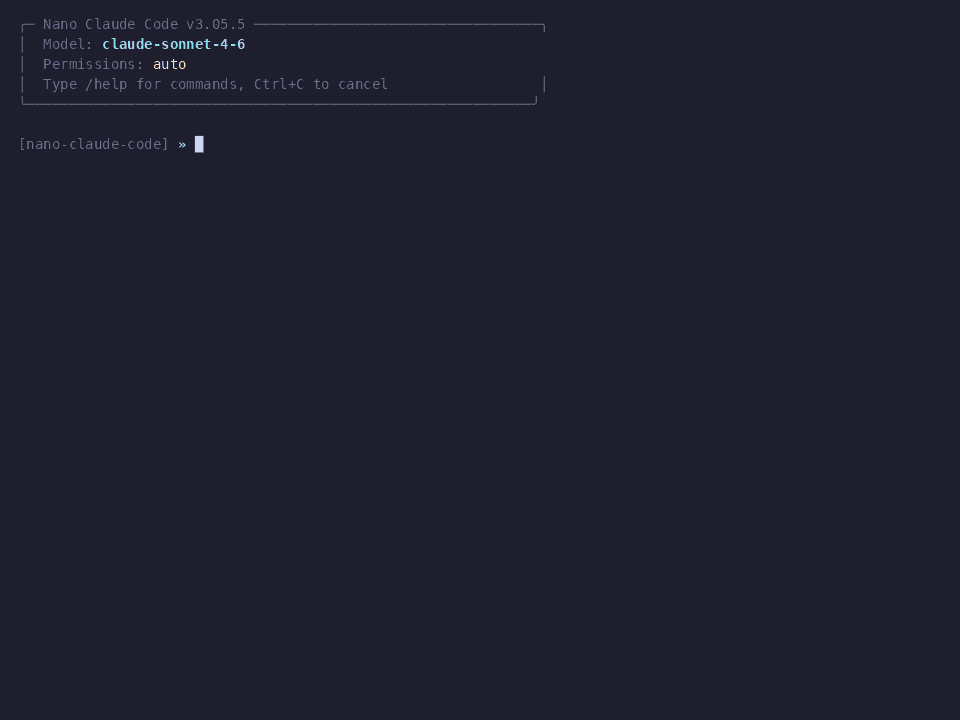
Autonomous Agent Mode
Agent works proactively in the background without prompts
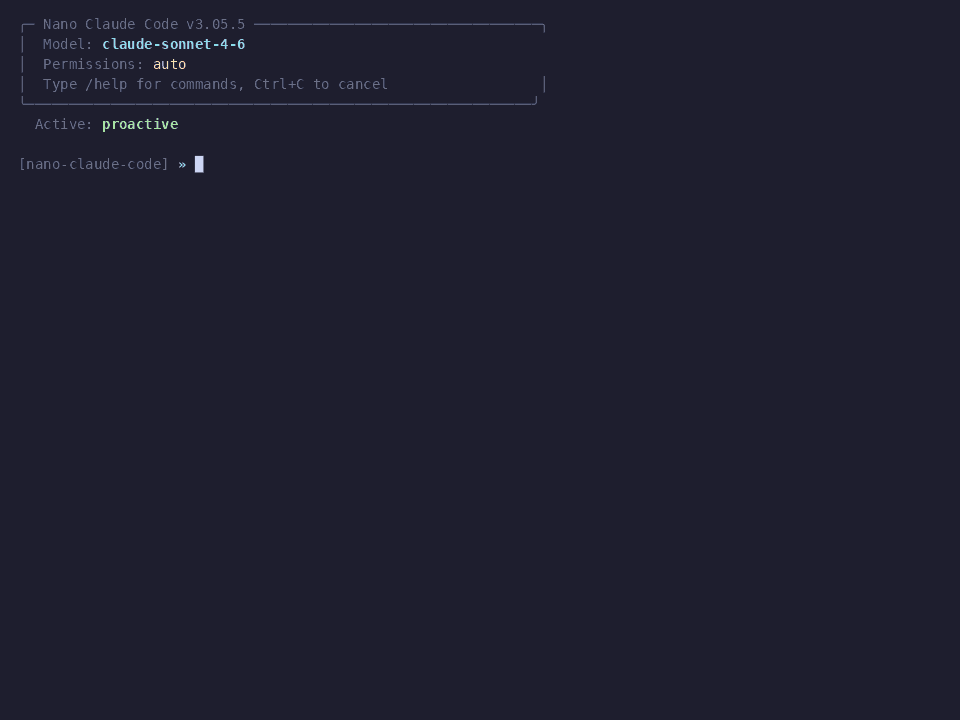
SSJ Developer Power Menu
18 workflow shortcuts: brainstorm, review, commit, research, and more
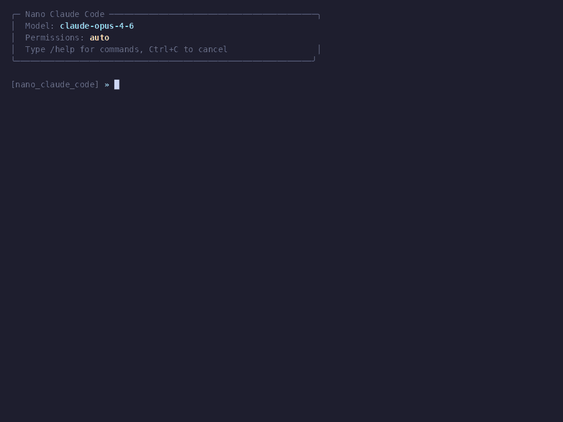
Remote Control from Telegram
Control your agent from your phone — send tasks, get results
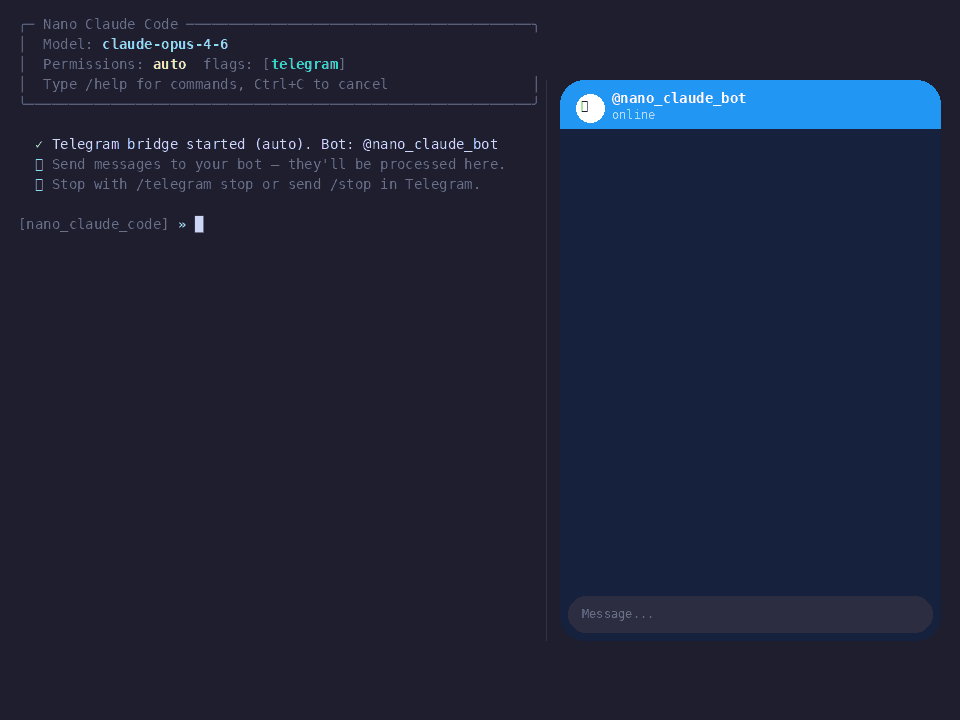
Remote Control from WeChat
Control your agent from WeChat (微信) — scan QR, start chatting
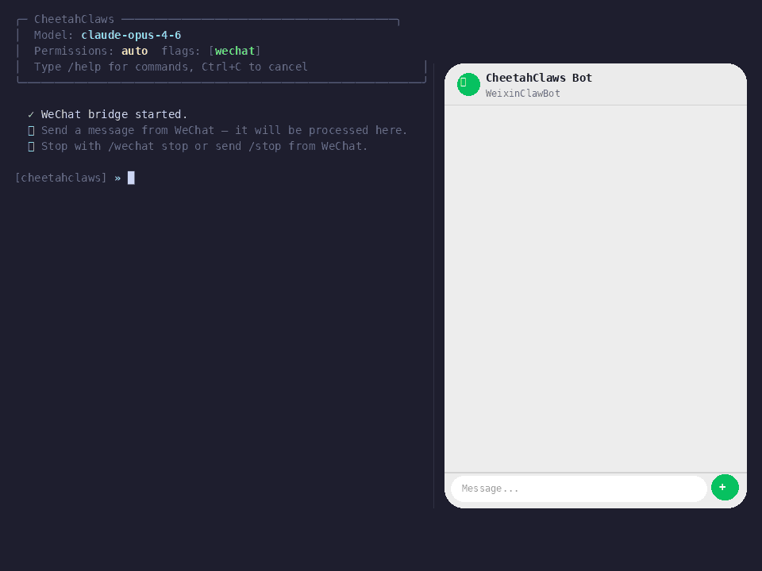
Remote Control from Slack
Control your agent from a Slack channel — team-friendly
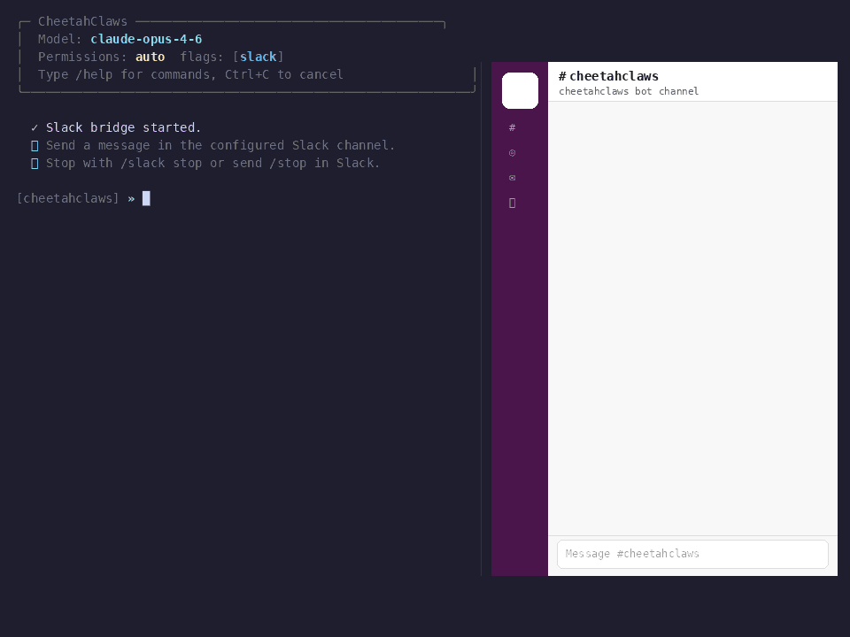
Plan Mode
Analyze codebase in read-only mode, write a plan, then implement
Multi-Agent Sub-Tasks
Spawn parallel sub-agents with git worktree isolation
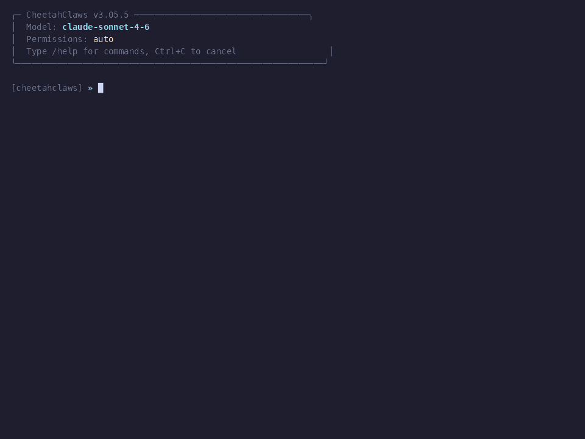
Persistent Memory
Save and recall facts, preferences, and decisions across sessions
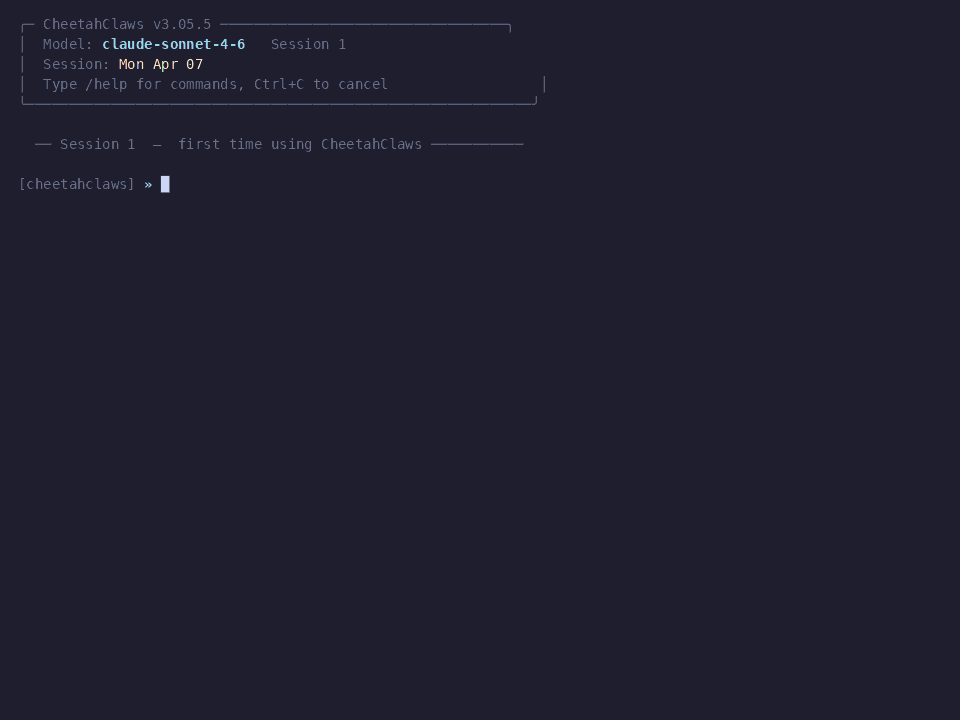
Multi-Model Switching
Switch between Claude, GPT, Gemini, Ollama mid-conversation
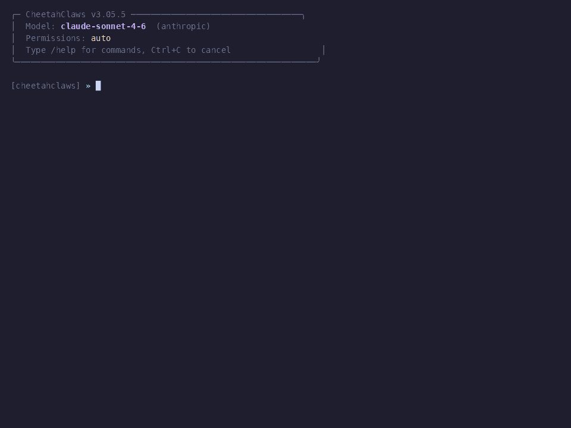
Checkpoint & Rewind
Auto-snapshot every turn — rewind files and conversation to any point
Voice Input
Speak your prompt — offline Whisper transcription, 99 languages
Vision Input
Paste an image and ask questions — works with local and cloud models
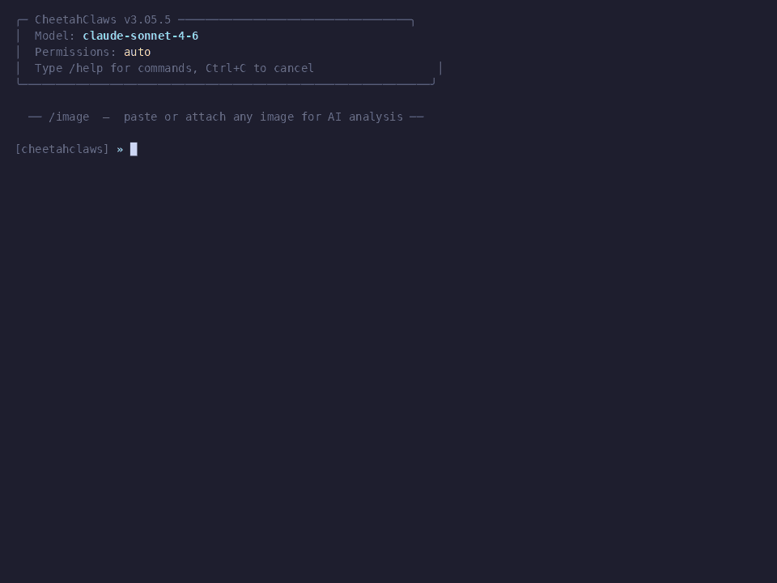
AI Video Factory
Generate videos: story → TTS narration → AI images → subtitles → MP4
Worker — Auto-Implement Tasks
Automatically implement TODO items from brainstorm output
Tmux Terminal Control
Split panes, run long tasks, capture output — 11 tmux tools
Cloud Session Sync
Backup conversations to GitHub Gist — resume from any machine
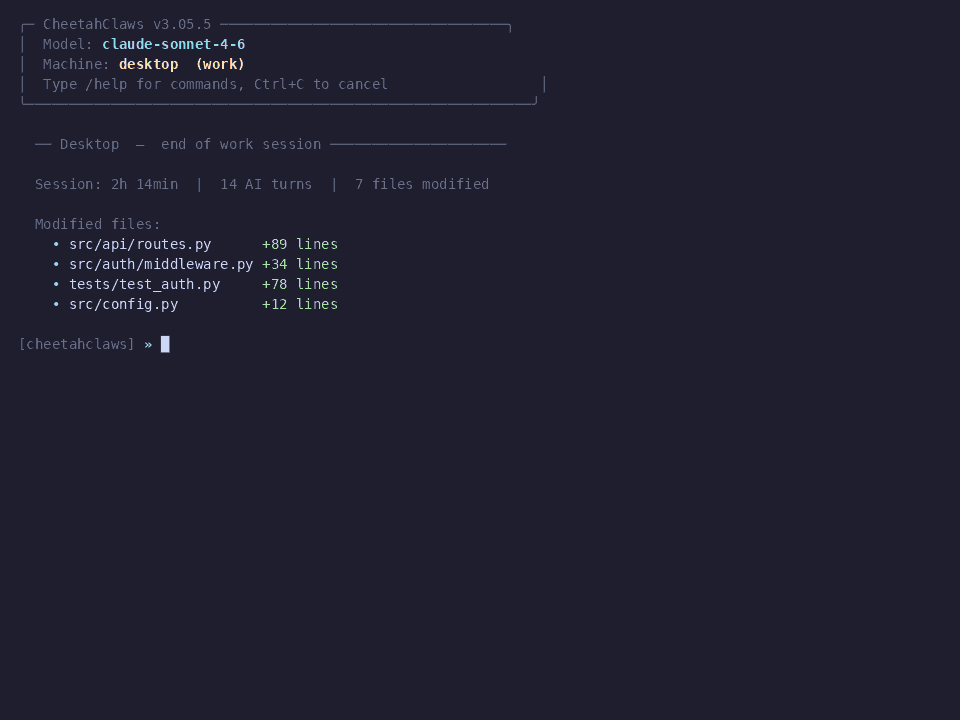
Trading Agent
Autonomous trading agent — monitor markets, analyze signals, execute strategies
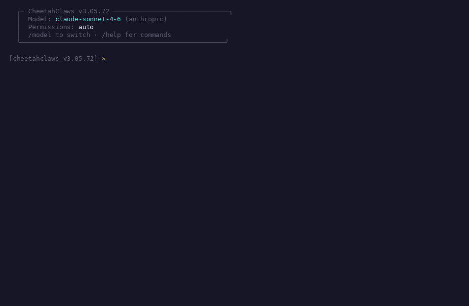
Shell Escape
Run any shell command inline with !command — git, ls, python, etc.
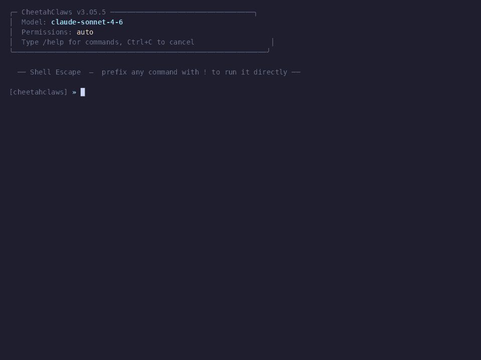
How CheetahClaws Compares
All three are personal AI assistants — but they aim at different goals. Here's where CheetahClaws stands out vs. OpenClaw and Claude Code.
| CheetahClaws | OpenClaw | Claude Code | |
|---|---|---|---|
| Primary focus | Coding & productivity assistant for terminal + web | Multi-channel messaging assistant (WhatsApp, iMessage, Slack…) | Coding assistant tightly coupled to Claude API |
| Language & runtime | Python 3.10–3.13, ~40K LOC, fully readable | TypeScript / Node.js 22+ | TypeScript / Node.js (compiled, ~12 MB minified) |
| Model providers | ✓ 10+ providers, 200+ models — Claude, GPT, Gemini, DeepSeek, Qwen, Kimi, GLM, MiniMax, Ollama, vLLM, LM Studio | Cloud-first, primarily one frontier provider | ✗ Anthropic Claude only |
| Local / offline models | ✓ Native Ollama / vLLM / LM Studio with streaming & tool-calling | Limited; cloud-first design | ✗ None — requires Anthropic API |
| Switch model mid-chat | ✓ /model swaps any provider live |
Limited | ✗ Claude variants only |
| Built-in tools | ✓ 33 tools — Read, Write, Edit, Bash, Glob, Grep, WebFetch, WebBrowse, ReadPDF, ReadEmail, NotebookEdit… | Channel & messaging tools | ~15 core file/shell/web tools |
| Remote control (phone/chat) | ✓ Telegram, WeChat, Slack bridges with job queue | ✓ 22+ channels (its core strength) | ✗ Terminal / IDE only |
| Voice input (offline) | ✓ Offline Whisper, 99 languages, no API key | Speak / listen on macOS / iOS / Android | ✗ Not built-in |
| PDF / Excel / Email tools | ✓ ReadPDF, OCR, Excel, IMAP / SMTP — all native | Via channel integrations | ✗ Bring your own |
| Multi-agent & sub-agents | ✓ Parallel sub-agents with git-worktree isolation, 4 autonomous templates | Limited | ✓ Task / sub-agent system |
| Hackability | ✓ Plain Python — read it, fork it, write a plugin in an afternoon | TypeScript monorepo, larger surface area | ✗ Closed source binary; source is reverse-engineered |
| License | Apache 2.0 — fully open | MIT — fully open | Proprietary (Anthropic) |
| Cost | Free — pay only your model provider (or $0 with Ollama) | Free + your model API | Bundled with Anthropic API / subscription |
Our pitch
CheetahClaws
Pick any model, run anywhere, hack the source. The fastest path from "I want an AI to do X" to actually doing it.
- Any model — cloud or local
- 33 built-in tools out of the box
- Phone, voice, PDF, email — all native
- Pure Python, easy to extend
Different goal
OpenClaw
A messaging-first assistant. Great if you want one bot answering you across 22+ chat platforms.
- Multi-channel chat reach
- Mobile-first (iOS / Android / macOS)
- Less focused on coding workflows
- Cloud-first, limited local-model support
Claude only
Claude Code
Anthropic's official terminal coding agent. Polished, but locked to one vendor and one language.
- First-party Claude features
- Tight Anthropic API integration
- Locked to Anthropic models
- No local models, no remote channels
Frequently Asked Questions
Quick answers to the questions everyone asks first.
How much does CheetahClaws cost?
CheetahClaws itself is free and open source (Apache-2.0). You only pay your model provider's API fees — which can be $0 if you use Ollama / LM Studio / vLLM with local models, or pennies per task with DeepSeek, GPT-4o-mini, or Gemini Flash.
Do I need an Anthropic / OpenAI API key?
No. CheetahClaws works with any OpenAI-compatible endpoint — including fully local models via Ollama. First run,
cheetahclaws --setup will let you pick. Switch providers anytime with /model.How is this different from Claude Code?
Claude Code is closed-source and Anthropic-only. CheetahClaws is a Python-native, Apache-2.0 reimplementation that supports 10+ providers (Claude, GPT, Gemini, DeepSeek, Qwen, Kimi, GLM, Ollama, vLLM, LM Studio…), adds an Agent-OS kernel, autonomous Research Lab, daemon mode, and Telegram / WeChat / Slack bridges. See the full comparison →
Can I run it fully offline?
Yes. Install Ollama, run
cheetahclaws --model ollama/qwen2.5-coder, and nothing leaves your machine. Voice input also runs offline (local Whisper, 99 languages). Vision works with local vision models like llava / gemma4.What hardware do I need?
For cloud models — any laptop. For local models — depends on the model size. A 7B-parameter model runs comfortably on 16 GB RAM (CPU-only is fine for casual use; GPU/Apple-Silicon recommended). The daemon mode is designed to run on a $100 mini-PC home server.
Is it safe to give it shell access?
Permission system with three modes:
auto / manual / plan. Plan mode is read-only — perfect for code review. Manual mode prompts you on every shell command. Built-in prompt-injection detection, credential filtering in /config, and a safe stdio wrapper. All open source — read the code.Can I extend it with my own tools?
Yes. Two ways: (1) Plugins — install from any git URL via
CHEETAHCLAWS_PLUGIN_PATH, contribute custom tools / commands / skills / MCP servers; (2) MCP — connect any MCP-compatible server over stdio, HTTP, or SSE with OAuth 2.0 PKCE.Does it work on Windows / WSL?
Yes — macOS, Linux, Windows (native + WSL). Python 3.10 – 3.13 supported. Tmux integration uses
psmux on Windows automatically. Docker setup gives identical behavior everywhere.How do I report bugs or request features?
Open an issue on GitHub Issues. Pull requests welcome — see CONTRIBUTING.md. The dev team ships multiple times per week — your issue will be seen quickly.
Cite CheetahClaws
Using CheetahClaws in your research? Please cite the project.
@article{cheetahclaws2026,
title={CheetahClaws: An Extensible, Python-Native Agent System for Autonomous Multi-Model Workflows},
author={CheetahClaws Team},
journal={github},
year={2026}
}
Start Building in 30 Seconds
One command to install. First run guides you through setup. No build step, no daemon, no subscription.